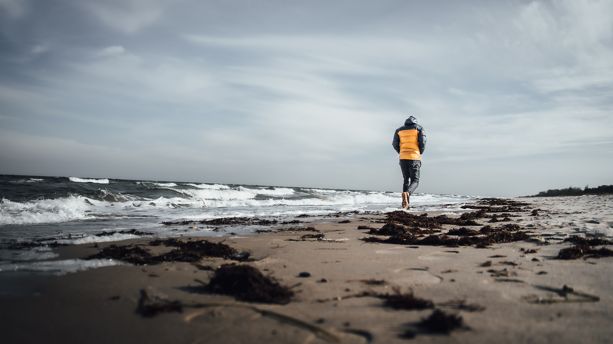
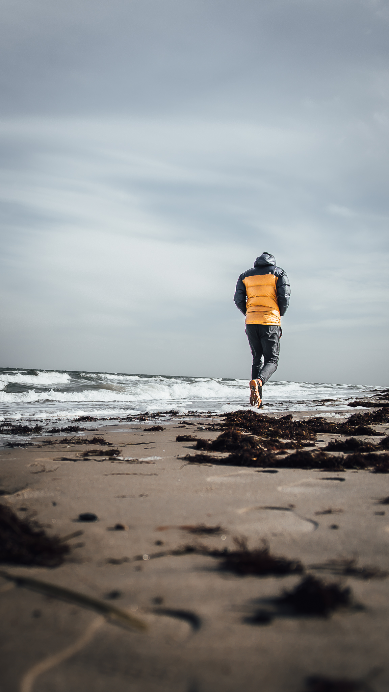
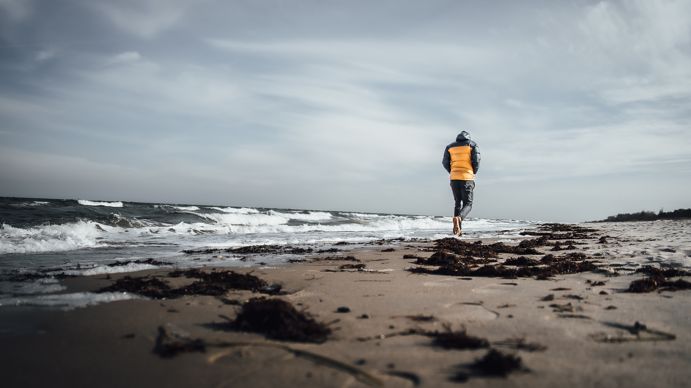
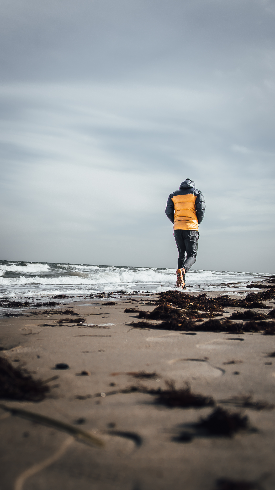

04 - Animation
På dette tema var vores mål at lære om javascript. Dette gjorde vi ved at designe et lille spil. Jeg udførte spillet ved hjælp af tidligere erfaringer om konceptudvikling. Her brugte jeg bla. en paperprototype for at teste spillets funktioner, som gjorde at jeg måtte fjerne et element fra mit spil. Spillet byggede jeg ud fra mit state machine diagram.
 



Det lærte mig
Det lærte mig vigtigheden i javascript til at lave et interaktivt site. Jeg lærte at gøre brug af tidligere erfaringer og værktøjer, både til design, konceptudvikling og programmering. Dette brugte jeg på senere temaer.